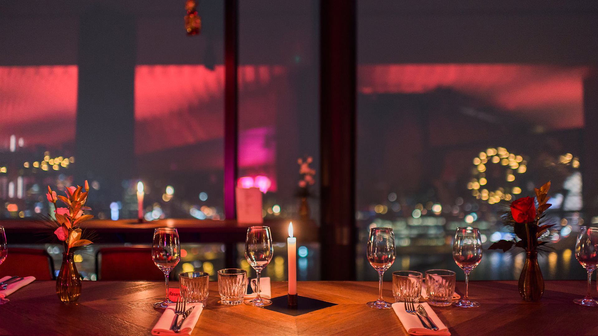

BLACKOUT AMSTERDAM BAR is a relatively new cocktail bar that opened in 2012 in Amsterdam's city center. The bar is located in a historic building that dates back to the 17th century, and its interior is decorated with minimalist elements that give it a new fashion, -world feel. The bar was founded by three experienced bartenders who wanted to create a space that was both sophisticated and welcoming. THE BLACKOUT has since gained a reputation for its inventive and expertly crafted cocktails, which use fresh ingredients and unique flavor combinations. Today, THE BLACKOUT is a popular destination for locals and tourists alike, and it continues to be recognized as one of the best cocktail bars in Amsterdam.